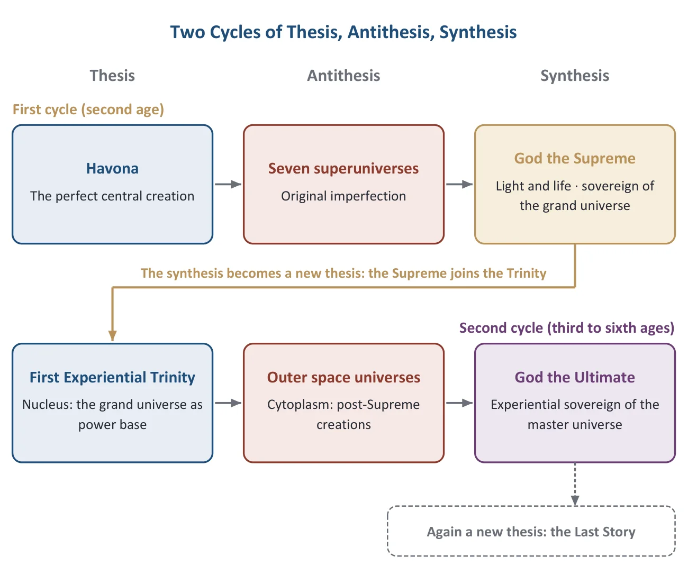

Original: La Historia Absonita, capítulo IX, La segunda síntesis: Dios el Último (pp. 88–94)
El universo maestro es vasto, pero tiene un final. Cuando su crecimiento alcance el borde del último nivel espacial, la segunda ronda de tesis, antítesis y síntesis llegará a su culminación. La primera síntesis, el Supremo, se convierte en la segunda tesis, la primera Trinidad experiencial; esa Trinidad organiza la segunda antítesis, los universos exteriores citoplásmicos, y finalmente los une en uno solo con el gran universo nuclear. En el nivel de la Deidad, esta segunda síntesis aparece como la emergencia final de Dios el Último. Sadler explica la Ultimidad comparándola con la Supremacía, ve completados aquí los siete niveles de la Deidad total y luego recorre el universo maestro terminado desde el centro hacia fuera.
El universo maestro es inmenso y, sin embargo, es limitado. Incluso el nivel más exterior del espacio exterior termina en alguna parte. Con tiempo suficiente se alcanzará ese borde, y en la eternidad hay tiempo suficiente. El libro de Urantia también considera el universo maestro como una creación delimitada.
…consideramos que el universo maestro tiene limitaciones, siendo definitivamente delimitado y contenido en sus fronteras exteriores por el espacio abierto.12:1.16
El mismo párrafo menciona a quienes suponen que más allá del cuarto nivel espacial puede haber un universo de infinidad en constante expansión. Sadler deja esto para la última parte de su libro y se concentra primero en el momento en que el crecimiento del universo maestro llega a su fin.
Un universo maestro terminado pone ante nosotros la segunda gran síntesis. Sadler vuelve a recorrer primero el primer ciclo. La primera tesis fue la creación central perfecta, que se alzaba como un desafío. La primera antítesis fue la incompletud inherente de los siete superuniversos. La primera síntesis llegó cuando los siete superuniversos, establecidos en luz y vida, alcanzaron el estado perfeccionado y entraron en armonía finita con la creación central perfecta. En el nivel de la Deidad esta síntesis apareció como la emergencia final del Ser Supremo: Dios el Supremo, una personalidad espiritual, se hizo uno con el poder soberano experiencial del Todopoderoso surgido del tiempo y el espacio. Fue la culminación de la síntesis de poder-personalidad con respecto a la totalidad de la realidad finita.
Una vez que el Supremo ha aparecido, una nueva Trinidad puede hacerse real y, al hacerlo, la primera síntesis se convierte en la segunda tesis. Esa segunda tesis es la primera Trinidad experiencial. Tomando el nuevo universo nuclear, el gran universo, como nueva base de poder, se extiende hacia el espacio exterior, acompañada de innumerables creadores y criaturas que cooperan con ella. La segunda antítesis son los universos del espacio exterior, que desempeñan el papel del citoplasma. Estas creaciones post-Supremas difieren de todo lo que ha aparecido hasta ahora en cualquier parte de la creación maestra.

Aquí Sadler plantea una pregunta intrigante. La Trinidad del Paraíso podría haber creado un universo existencial tan grande como toda la creación maestra. Pero ¿con qué fin? No habría sido más que Havona a mayor escala. Una creación gigantesca dotada de perfección innata habría añadido cantidad, no calidad, a la divinidad existencial real. Sadler supone que Havona fue diseñada con el tamaño justo para servir de modelo apropiado a todos los universos que vinieron después. Gracias a lo que él llama la «moderación cuantitativa» (quantitative restraint) de la Trinidad del Paraíso, la primera Trinidad experiencial puede aparecer y colaborar, y el universo maestro se construye no como una copia de Havona sino como una creación experiencial nueva y diferente. El libro de Urantia llama a Havona un retrato acabado de la perfección futura del Supremo.
Havona es un modelo original perfecto del potencial de la universalidad del Supremo. Este universo es un cuadro acabado de la perfección futura del Supremo y sugiere el potencial del Último.14:6.25
La culminación del universo maestro es el fruto del esfuerzo exitoso de la primera Trinidad experiencial por llegar a ser una realidad de Deidad unificada, como lo es la Trinidad del Paraíso. Sadler resume tres etapas en la vida de la Trinidad Última. Aun antes de que emergiera el Ser Supremo, esta Trinidad ya era una realidad cualificada. Cuando el Supremo emerge plenamente y su composición está completa, se convierte en una realidad fáctica. Cuando el universo maestro está terminado, alcanza la síntesis final de poder-personalidad y se convierte en una realidad plenamente unificada. Sobre la primera etapa el texto habla directamente.
2. El Supremo difícilmente podría funcionar en la Trinidad Última hasta haber alcanzado actualidad completa de estado universal, y sin embargo la Trinidad Última aun ahora es una realidad cualificada, y se os ha informado de la existencia de los Vicegerentes Cualificados del Último.117:7.4
Cuando todo el universo maestro haya sido completado y la Trinidad Última unificada, la segunda síntesis se hace posible: el núcleo, el gran universo, y el citoplasma, los universos exteriores, se hacen uno. En el nivel de la Deidad esta síntesis se manifiesta como la emergencia final de Dios el Último, el soberano experiencial de la creación maestra.
La eventuación completada del Último implica que se completó la creación maestra e indica el surgimiento pleno de esta Deidad trascendental.106:4.2
A lo largo de las largas edades del crecimiento del universo maestro, Dios el Último emerge lentamente del estado de Deidad incognoscible e incompleta al de Deidad cognoscible y experiencialmente completada. Los mortales toman conciencia del desafío de la Ultimidad desde que ingresan en el Cuerpo de la Finalidad. Una vez alcanzado el Supremo, la Ultimidad se convierte en la meta de la búsqueda de la Deidad experiencial para los finalistas y para todos los demás seres en crecimiento.
Sadler retoma la analogía del capítulo anterior. Completar al Supremo requiere un dominio del tamaño de una pelota de tenis; completar la Ultimidad requiere uno del tamaño de la luna. Si el perfeccionamiento de los superuniversos lleva «una hora de la eternidad», entonces, según su estimación, completar el universo maestro lleva «diez mil años de la eternidad»: un lapso considerable incluso para la medida de la eterna Havona.
Entre las Deidades experienciales, Dios el Último viene en segundo lugar. Sadler explica la Ultimidad poniéndola junto a la Supremacía. El libro de Urantia presenta a Dios el Último de la siguiente manera.
6. Dios el Último: el Dios que eventúa del supertiempo y del espacio trascendido. El segundo nivel experiencial de la manifestación de la Deidad unificante.0:2.17
| Punto de comparación | Supremacía | Ultimidad |
|---|---|---|
| Nivel de crecimiento | Finito | Absonito |
| Dominio de la poder-personalización | Gran universo | Todo el universo maestro |
| Simboliza la Trinidad del Paraíso para | Las criaturas finitas | Los seres absonitos |
| Presencia | Ubicua (presente en muchos lugares) | Omnipresente (presente en todas partes) |
| Poder | Todopoderoso | Omnipotente |
| Conocimiento | Conciencia de reflectividad; correlación de la presciencia | Omnisciente |
Sadler subraya que el Último no es simplemente un «super-Supremo». La Ultimidad es mayor no solo en cantidad sino también en complejidad cualitativa. En este punto coincide exactamente con el texto.
Aunque el Último y el Supremo sean comparables, no son idénticos, tampoco es el Último simplemente una amplificación del Supremo.106:8.15
Dentro de los confines de la creación maestra, la Ultimidad es verdaderamente omnipresente, omnipotente y omnisciente. Esto concuerda con la descripción que hace el texto del séptimo nivel de la Deidad total.
7. Último — Deidad autoproyectada y que trasciende el tiempo y el espacio. Deidad omnipotente, omnisciente, y omnipresente.0:1.10
Sadler supone que ninguna criatura encontrará al Último hasta que todas lo encuentren, extendiendo a la Ultimidad lo que El libro de Urantia dice del Supremo.
Pero ninguna persona que asciende hallará jamás al Supremo hasta que todos los que ascienden hayan alcanzado esa máxima madurez universal que los califica simultáneamente para participar en este descubrimiento.117:6.21
Sin embargo, cuando por fin encontremos al Último, lo comprenderemos, y en esa comprensión llegaremos a conocer al Padre como Último. Para Sadler, es aquí donde la búsqueda absonita del Padre Universal alcanza su meta.
Con la emergencia de Dios el Último, el séptimo nivel de la función de la Deidad total queda completo. Aquí Sadler recorre de un solo trazo el camino de los capítulos anteriores: la Deidad antes de la creación, que pasa de la quietud a la planificación y de la planificación a la acción; la Deidad creadora, que se nutre de los Absolutos de la potencialidad para dar origen a los universos posteriores a Havona; la Deidad en evolución, que crece en el tiempo y por medio de la experiencia; y la Deidad en el nivel supremo, que interactúa en los niveles finitos. Ahora, en el séptimo nivel, las dos Trinidades, la Trinidad existencial y la primera Trinidad experiencial, actúan juntas en asociación con Dios el Último.
Sadler reagrupa los siete niveles en tres conjuntos: tres niveles anteriores a la creación, dos que van hacia fuera y dos que recogen hacia dentro. En los dos últimos, son el Supremo y el Último quienes logran la unificación experiencial, la síntesis final de poder-personalidad. El original cierra el capítulo con un resumen de los siete niveles; puesto junto a los capítulos anteriores de este libro, puede ordenarse como sigue.
| Conjunto | Nivel | Lo que hace la Deidad | Tratado en este libro |
|---|---|---|---|
| Antes de la creación | 1. Estático | Autoexistente; todavía sin plan | Capítulo 2 |
| Antes de la creación | 2. Potencial | Planifica; los Absolutos de la potencialidad | Capítulo 2 |
| Antes de la creación | 3. Asociativo | Unidad en el Absoluto Universal y en la Trinidad del Paraíso | Capítulo 2 |
| Hacia fuera | 4. Creativo | Da origen a cosas y seres nuevos a partir del potencial; Dios el Séptuple | Capítulo 5 |
| Hacia fuera | 5. Evolutivo | La creación unida al tiempo; las criaturas participan | Capítulo 6 |
| Hacia dentro | 6. Supremo | Unifica toda la actividad finita en el Supremo | Capítulo 7 |
| Hacia dentro | 7. Último | Unifica toda la actividad absonita en el Último | Este capítulo |
La culminación y unificación del universo maestro, desde Havona hasta el último nivel del espacio exterior, es una perspectiva sobrecogedora. Sadler la recorre desde el centro hacia fuera, comenzando por el universo central. El divino universo central encierra mucho de lo que está más allá de lo finito, y él espera que algunos de sus significados y valores se coordinen funcionalmente con el universo maestro hacia el final de la sexta edad. Como la emergencia final del Último marca el término del crecimiento experiencial absonito, debe comenzar un crecimiento post-último. Tal crecimiento va más allá de lo último, y todo lo que va más allá de lo último es absoluto o, al menos, coabsoluto. Sadler cree que entonces se abrirán fases post-últimas de la vida de Havona en las que nunca han entrado los seres experienciales. Al mismo tiempo, está seguro de una cosa: ningún desarrollo, dentro o fuera del universo maestro, superará las capacidades y funciones de la creación central, el universo modelo.
El gran universo probablemente seguirá bajo el gobierno del Supremo y quedará al mismo tiempo bajo la soberanía envolvente del Último. Los superuniversos rompen ahora por segunda vez la barrera del crecimiento experiencial. La primera ruptura se produjo cuando emergió el Supremo: el crecimiento absonito se superpuso a los límites finitos del establecimiento en luz y vida. La segunda llega con la emergencia final del Último: el potencial post-último se superpone a los límites del crecimiento absonito completado, y los universos interiores se encuentran ante las posibilidades insondables de la expansión coabsoluta.
¿Cómo será entonces un planeta como Urantia? Sadler responde con una sola comparación. Una gran distancia en civilización y cultura separa a un mundo establecido desde hace mucho en la última etapa de luz y vida de un planeta primitivo en su era de las cavernas. Un mundo en la etapa post-última estará todavía más alejado de un mundo establecido en luz y vida. No puede decirse nada, salvo que supera toda imaginación.
El universo maestro está ahora unificado bajo la soberanía experiencial del Último. Desde los circuitos del Padre cercanos al Paraíso hasta el borde más exterior del cuarto nivel espacial, este es también el dominio en el que funciona la primera Trinidad experiencial. Los universos exteriores rompen por primera vez los límites del crecimiento experiencial, trascendiendo los límites del crecimiento absonito. Así, todo el universo maestro se encuentra en el umbral del crecimiento post-último, y Sadler piensa que con ello probablemente se completa la historia de la creación.
Los Arquitectos Maestros son el plano viviente de todo el universo maestro, la personalización eterna del plan completo de Dios para la creación maestra. Ahora que el plan se ha hecho real, han cumplido su función asignada como planificadores del universo. Pero Sadler se pregunta si su obra ha terminado también en lo que respecta al crecimiento interior y profundizador que el universo maestro pueda experimentar en niveles post-últimos. Se ha logrado el crecimiento en los niveles supremo (finito) y último (absonito); sin embargo, incluso después de la sexta edad, parece que quedan sin realizar potenciales de naturaleza supremo-última.
Aquí concluye el estudio del crecimiento exterior y expansivo del universo maestro. La historia de su crecimiento interior y profundizador, sin embargo, no ha terminado. Como hemos visto, siempre que se completa una gran síntesis, esta comienza a convertirse en una nueva tesis. Sadler termina el capítulo dirigiendo la mirada más allá de la sexta edad, hacia el universo maestro de las edades post-últimas. Es allí donde comienza la Historia Final.